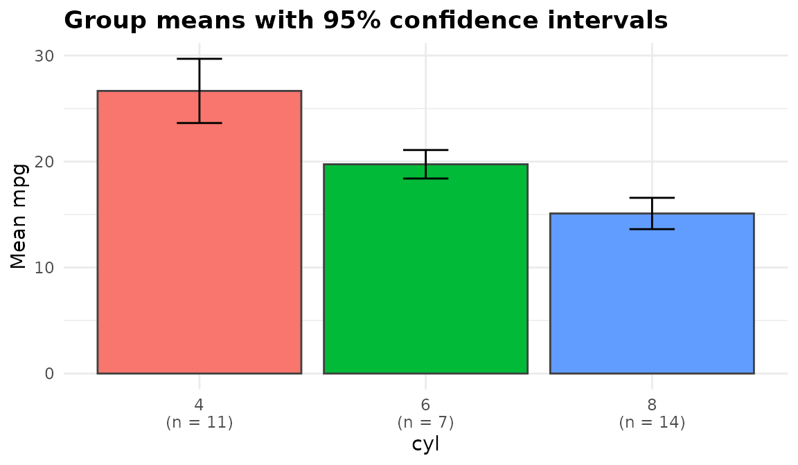
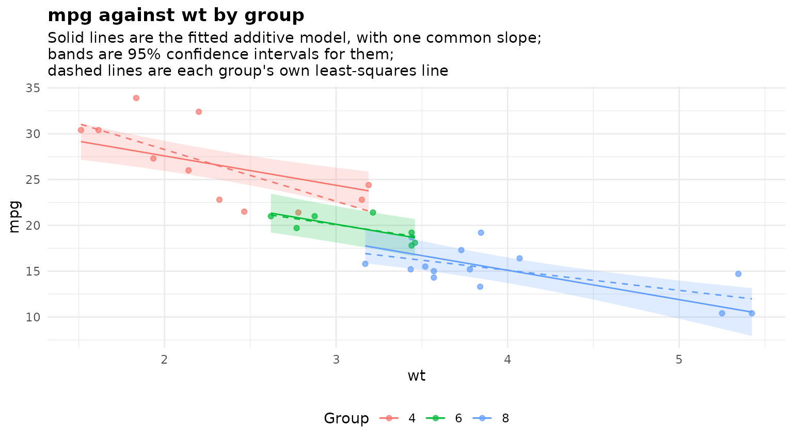

This page runs one analysis from start to finish, repeats it with a
model that adjusts for a covariate, and lists the arguments every
function shares. The other six functions return the same kind of object,
with the same $notes, $emmeans,
$posthoc and plot().
Installation
# install.packages("remotes")
remotes::install_github("elkronos/anovakit", build_vignettes = TRUE)A first analysis
mtcars records the fuel economy (mpg) of 32
cars with 4, 6 or 8 cylinders. The question is whether mean fuel economy
differs by cylinder count.
table(mtcars$cyl)
#>
#> 4 6 8
#> 11 7 14
round(tapply(mtcars$mpg, mtcars$cyl, sd), 2)
#> 4 6 8
#> 4.51 1.45 2.56The 4-cylinder cars vary far more than the 6-cylinder ones, so the
comparison should not assume equal variances. anova_welch()
does not.
fit <- anova_welch(mtcars, "mpg", "cyl")
fit
#> Welch's analysis of variance
#> ----------------------------
#> Call: anova_welch(data = mtcars, response = "mpg", groups = "cyl")
#> Observations used: 32
#>
#> Omnibus test (Welch F)
#> term statistic num_df den_df p_value
#> 1 cyl 31.62 2 18.03 1.271e-06
#>
#> Notes
#> - Largest group variance is 9.63 times the smallest. Welch's test handles this; the classical F test would not.
#>
#> Plots available: means, box, qq
#> (use plot(x, which = "means"))cyl is numeric in mtcars; grouping columns
are converted to factors.
The printed result has four parts: the call and the number of rows used, the omnibus test, the notes, and the names of the plots that were built.
The notes
$notes records what the function decided on your behalf,
what it could not compute, and anything that changes how a number should
be read.
fit$notes
#> [1] "Largest group variance is 9.63 times the smallest. Welch's test handles this; the classical F test would not."Here it reports the variance ratio, which is the reason to use Welch’s test. On other data it would say how many rows were dropped for missing values, or that a check could not run. Read it before you report anything from a fit.
The summary
summary() adds the assumption checks, effect sizes,
group summaries and pairwise comparisons.
summary(fit)
#> Welch's analysis of variance
#> ----------------------------
#> Call: anova_welch(data = mtcars, response = "mpg", groups = "cyl")
#> Observations used: 32
#>
#> Omnibus test (Welch F)
#> term statistic num_df den_df p_value
#> 1 cyl 31.62 2 18.03 1.271e-06
#>
#> Notes
#> - Largest group variance is 9.63 times the smallest. Welch's test handles this; the classical F test would not.
#>
#> Plots available: means, box, qq
#> (use plot(x, which = "means"))
#>
#> Assumption checks
#>
#> normality
#> group n statistic p_value note
#> 4 11 0.9124 0.2606 <NA>
#> 6 7 0.899 0.3252 <NA>
#> 8 14 0.9318 0.3229 <NA>
#>
#> variance_ratio
#> 9.626
#>
#> Effect sizes
#> group1 group2 hedges_g conf_low conf_high magnitude standardiser
#> 4 6 1.933 0.8801 3.208 large sqrt((s1^2 + s2^2) / 2)
#> 4 8 3.005 1.752 4.518 large sqrt((s1^2 + s2^2) / 2)
#> 6 8 2.139 1.121 3.305 large sqrt((s1^2 + s2^2) / 2)
#>
#> Group summaries (95% intervals)
#> group n mean sd se conf_low conf_high
#> 4 11 26.66 4.51 1.36 23.63 29.69
#> 6 7 19.74 1.454 0.5494 18.4 21.09
#> 8 14 15.1 2.56 0.6842 13.62 16.58
#>
#> Pairwise comparisons
#> group1 group2 difference conf_low conf_high statistic df p_value
#> 4 6 6.921 3.751 10.09 4.719 12.96 0.0004048
#> 4 8 11.56 8.319 14.81 7.597 14.97 1.641e-06
#> 6 8 4.643 2.803 6.483 5.291 18.5 4.54e-05
#> p_adjusted adjustment
#> 0.0004048 holm
#> 4.924e-06 holm
#> 9.081e-05 holmThe assumption checks are the ones that fit the method. Welch’s test
allows unequal variances, so normality is tested within each group, not
on pooled residuals. The effect sizes are Hedges’ g on the average of
the two group variances (the standardiser column gives the
formula), with intervals. The pairwise comparisons are Welch t tests;
p_value is unadjusted and p_adjusted uses
Holm’s method, the default for anova_welch().
Every table is a data frame you can use directly:
fit$posthoc[, c("group1", "group2", "difference", "conf_low", "conf_high",
"p_adjusted")]
#> group1 group2 difference conf_low conf_high p_adjusted
#> 1 4 6 6.920779 3.751376 10.090182 4.048495e-04
#> 2 4 8 11.563636 8.318518 14.808755 4.924043e-06
#> 3 6 8 4.642857 2.802925 6.482789 9.080709e-05A plot
Plots are built when you fit and returned as ggplot2
objects. Nothing is drawn until you print one.
plot(fit, "means")
The same analysis with a covariate
Heavier cars use more fuel, and the 8-cylinder cars are the heaviest.
An ANCOVA compares the cylinder groups at the same weight
(wt, in thousands of pounds).
anc <- anova_ancova(mtcars, "mpg", "cyl", "wt")
anc
#> Analysis of covariance (Type III)
#> ---------------------------------
#> Call: anova_ancova(data = mtcars, response = "mpg", groups = "cyl", covariates = "wt")
#> Observations used: 32
#>
#> Omnibus test (Type III, F)
#> term sum_sq df statistic p_value
#> 1 wt 118.2 1 18.08 0.000213
#> 2 cyl 95.26 2 7.286 0.002835
#> 3 Residuals 183.1 28 NA NA
#>
#> Notes
#> - Covariate(s) mean-centred before fitting (wt: 3.217), so the intercept refers to the covariate mean rather than to covariate = 0. $emmeans are evaluated at the covariate mean either way.
#> - Slopes are consistent with being equal across groups (p = 0.1239), so the additive model was used. A non-significant test is not proof of equal slopes, only an absence of evidence against it, and the p-values below do not allow for the model having been chosen by a test on these same data: if the slopes do differ, the group row and $posthoc can reject more often than their nominal level, somewhat so even when the groups were randomised and far more so when the groups' covariate means are unequal. Setting force_interaction = TRUE in advance avoids the selection step.
#> - The covariate means differ between groups (largest difference: wt 2.72 pooled within-group SDs). With the slopes assumed equal, any real difference in slopes biases the adjusted comparisons by the slope difference times the covariate-mean difference, and the homogeneity-of-slopes test often lacks the power to detect a difference large enough to matter, so the group row and $posthoc can reject far more often than their nominal level. force_interaction = TRUE does not assume equal slopes.
#> - $emmeans are evaluated at the covariate mean, but wt = 3.217 lies outside the range observed in 4 [1.513, 3.19]. The adjusted means there are extrapolations along the fitted slope to covariate values none of those observations have, so they and the comparisons that involve them rest on the model's linearity rather than on data.
#>
#> Plots available: residuals, qq, covariate, emmeans
#> (use plot(x, which = "residuals"))The call has the same shape, with the covariate as the fourth argument. The notes record four things:
-
wtwas mean-centred at 3.217. The model is additive, so centring changes only the intercept, and$emmeansare evaluated at that mean weight either way. Centring matters when the model includes the group-by-covariate term. - The homogeneity-of-slopes test gave p = 0.124, so the function fitted the additive model, and the p-values do not allow for that choice.
- The groups’ mean weights differ by up to 2.72 pooled within-group standard deviations, which makes the adjusted comparisons sensitive to a slope difference the test may have missed.
- The heaviest 4-cylinder car weighs 3.190, less than the average car, so the marginal mean for that group is an extrapolation.
These are observational data, and the notes say how far the adjusted comparison leans on the model. The marginal means and comparisons are in the same places as before:
anc$emmeans
#> cyl estimate se df conf_low conf_high
#> 1 4 23.67753 1.0428474 28 21.54136 25.81371
#> 2 6 19.42195 0.9693650 28 17.43630 21.40761
#> 3 8 17.60668 0.9025074 28 15.75797 19.45538
anc$posthoc[, c("contrast", "estimate", "conf_low", "conf_high",
"p_adjusted")]
#> contrast estimate conf_low conf_high p_adjusted
#> 1 cyl4 - cyl6 4.255582 0.8259527 7.685212 0.012696957
#> 2 cyl4 - cyl8 6.070860 1.9825209 10.159199 0.002785371
#> 3 cyl6 - cyl8 1.815277 -1.5439851 5.174540 0.387082329The covariate plot draws the fitted model (solid lines, one common slope) and each group’s own least-squares line (dashed) over the data. The 4-cylinder cars (at most 3.190) and the 8-cylinder cars (at least 3.170) barely overlap in weight.
plot(anc, "covariate")
To fix the model in advance instead of letting the slopes test choose
it, set force_interaction = TRUE. The ANCOVA
walkthrough covers that choice, the slopes test and covariate
centring.
Arguments every function shares
Each function takes the data first and names columns as character
strings. anova_manova() takes responses
(plural), and anova_rm() takes response with
subject, within and between.
These arguments mean the same thing wherever they appear:
| Argument | Accepted by | Default | What it does |
|---|---|---|---|
conf_level |
all eight | 0.95 |
The level of every interval in the returned tables. |
adjust |
all eight |
"holm" (welch), "BH" (kw),
"tukey" (the rest) |
The multiplicity adjustment for the pairwise comparisons. |
posthoc |
all eight | TRUE |
FALSE skips the pairwise comparisons, with a note (in
anova_welch() this also empties
$effect_sizes). The six model-based functions also skip
them, with a note, above 5000 comparisons. |
plots |
all eight | TRUE |
FALSE skips building the figures, which is faster. |
verbose |
all eight | FALSE |
Progress messages through message(). |
interaction |
ancova, manova, bin, count, glm |
FALSE (TRUE in ancova) |
Additive, full factorial, or interactions up to a given order. |
type |
ancova, rm (through ...), manova, bin, count, glm |
"II" ("III" in ancova and rm) |
Type II or Type III tests; "III" fits the model under
sum-to-zero contrasts. |
covariates |
ancova, manova | none in manova (required in ancova) | Numeric columns to adjust for. |
vcov_type |
ancova, bin, count, glm | "model" |
"HC0" to "HC4" gives sandwich standard
errors. |
weights |
bin, count, glm | NULL |
Prior weights, named as a column. |
anova_welch() and anova_kw() accept the
p.adjust() methods for adjust. The other six
compare through emmeans and also accept "tukey",
"sidak", "scheffe" and
"dunnettx". Arguments specific to one function are on its
help page and in its walkthrough.
Where to go next
- Choose an analysis: which of the eight functions fits your data.
- A walkthrough for each function: Welch, Kruskal-Wallis, ANCOVA, repeated measures, MANOVA, binary outcomes, counts and rates and other GLM families.
-
Working
with results: every component of the returned object, the
emmeansgrid, tables for a report, many analyses at once. - Diagnostics: what each assumption check computes and how to read it.
- Plots and themes: customising the figures.
-
Weights
and robust standard errors: frequency, trial and sampling weights,
and
vcov_type. - Design choices: why the defaults are what they are.
?anovakit_fit documents every component of the returned
object, and each function’s help page documents its own arguments.